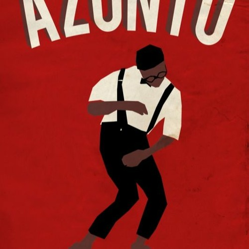

The base
Bent knees, low centre of gravity, hips leading. Everything else is built on this.
A mime-based dance where the hands act out everyday chores over a knee-bent, hip-driven base.

Azonto came up in Accra and the fishing communities around Tema, descended from an older Ga dance called kpanlogo. The base is constant: knees soft, weight low, hips and shoulders working against each other on the offbeat. What made it spread was everything happening on top of that base.
The hands mime. Ironing a shirt, driving a taxi, washing clothes, taking a phone call, praying, boxing — dancers narrate a whole routine of ordinary life while the legs keep the same pattern going. That turned it into a competition of wit as much as technique.
Azonto moved out of Ghana through the diaspora in London and through video-sharing, and by 2012 it had cross-pollinated with Nigerian afrobeats. Tracks by Fuse ODG and Sarkodie put it on European radio, and the dance outlived the specific songs that carried it.
Bent knees, low centre of gravity, hips leading. Everything else is built on this.
Ironing, driving, boxing, dialling a phone. Invent your own and it counts.
Deadpan or exaggerated, but never neutral. The expression sells the joke.